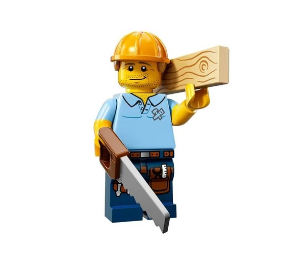
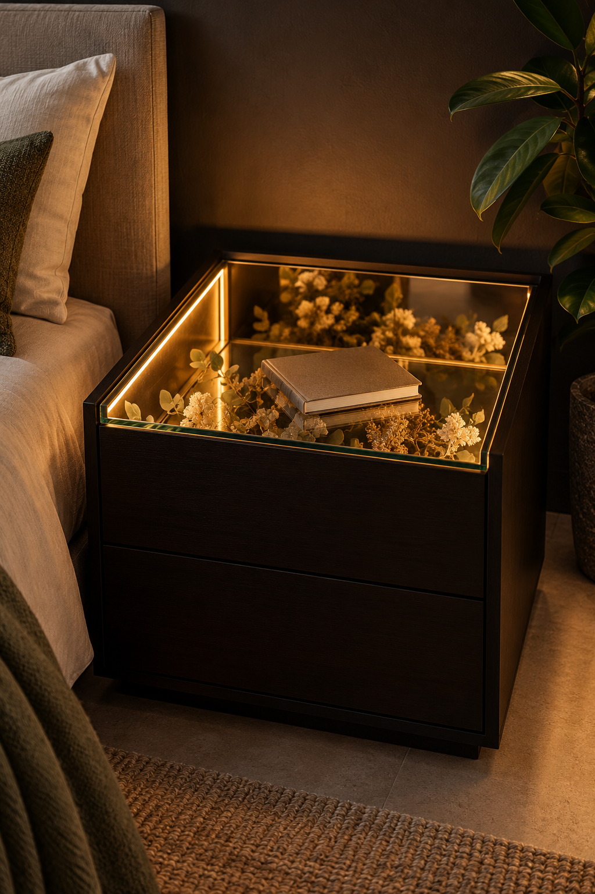
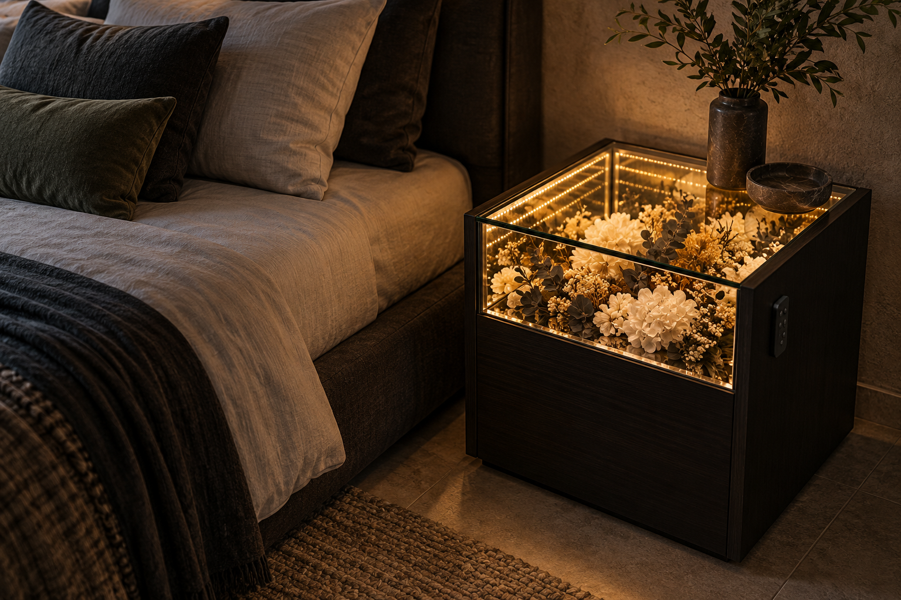
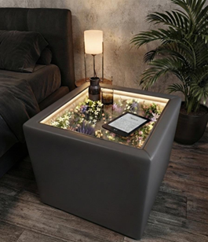
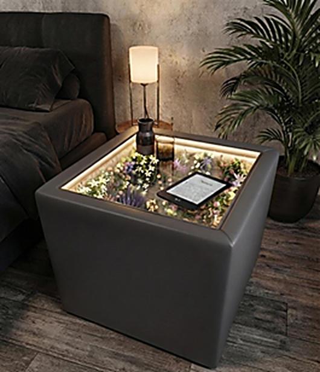
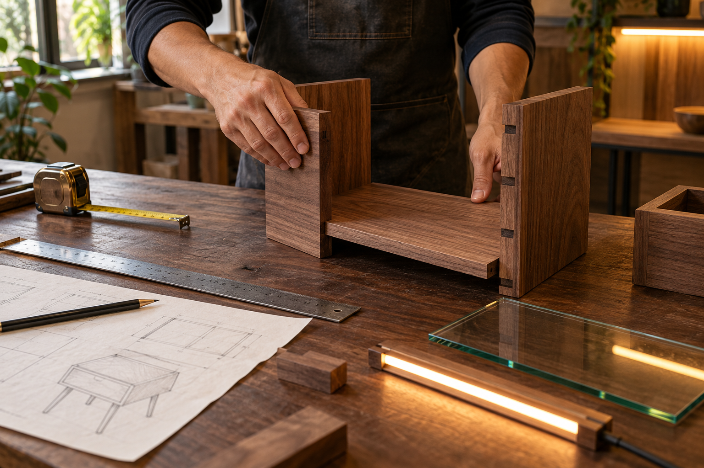

Cuaderno de taller / 01
Una pieza que se
arma con intención.
Del piso a la cubierta de cristal: seis pasos para entender el buró Lumina, sus medidas reales y la lógica detrás de cada unión.

- Alto × ancho × fondo
- 52 × 40 × 40 cm
- Estructura
- 5 paneles de madera
- Pasos de armado
- 06
Más fotos del buró
Una lectura visual del prototipo: su escala en la habitación, el detalle de la luz y el trabajo de ensamble que sostiene cada plano.





Armado paso a paso
Cómo se arma una pieza de bloques: cada paso suma una parte y hace visible la lógica del conjunto. El plano isométrico se actualiza con las piezas y medidas de cada etapa.
Vista isométrica · medidas en centímetros
-
El piso
Todo empieza con el tablero base. Es la pieza que fija la medida y el nivel: sobre ella se levantan las cuatro paredes.
- Piezas1 tablero base
- Medida40 × 40 cm · 15 mm
-
Las laterales
Levantamos las dos paredes laterales y las fijamos al piso. Marcan la profundidad y empiezan a armar la caja.
- Piezas2 paneles laterales
- Medida40 × 52 cm · 15 mm
-
Frente y fondo
Sumamos el frente y el fondo. Con estas cinco piezas la caja queda cerrada por sus cuatro lados: ya es la estructura del buró.
- Piezas2 paneles (frente + fondo)
- Medida40 × 52 cm · 15 mm
-
El interior
Al fondo, pegado a la pared, va el espejo: refleja el contenido y multiplica la profundidad hasta lograr el efecto 3D. Sobre el borde superior se pega la tira LED.
- PiezasEspejo + tira LED
- Espejo37 × 49 cm
- Luz12 V DC · cálido, frío y vivo
-
La cubierta
El cristal templado cierra la caja por arriba. Deja pasar la luz del LED y permite ver el interior desde arriba sin abrir nada.
- PiezaCristal templado
- Medida40 × 40 cm · 6 mm
-
Luz y control
Sale el cable de alimentación y se conecta el receptor del remoto. Encender, elegir tono e intensidad, y listo: el buró ya está terminado.
- PiezasCable + receptor
- ControlRemoto · 3 intensidades
- Cable1.5 m
Ficha técnica
Las medidas y los componentes de la pieza terminada, agrupados por tema. Son especificaciones de diseño y pueden ajustarse en la etapa de producción.
Medidas y materiales
- Dimensiones
- 52 × 40 × 40 cm
- Paneles
- 15 mm de espesor
- Estructura
- 5 paneles de madera
- Cubierta
- Cristal templado 6 mm
Alto, ancho y profundidad para quedar junto a la cama sin estorbar, con espacio de sobra para tus cosas.
Madera estructurada en cinco recuadros unidos en forma de caja para una pieza sólida y estable.
Un piso, dos laterales y dos frentes que forman la caja. Aguanta el uso diario de una recámara.
Deja pasar la luz y permite ver el interior desde arriba, con el borde pulido para un remate limpio.
Luz y electrónica
- Iluminación
- Tira LED regulable
- Tonalidades
- 2700 K · 4000 K · RGB
- Intensidad
- 3 niveles
- Control
- Remoto inalámbrico
- Alimentación
- 12 V DC · cable 1.5 m
- Consumo
- LED de alta eficiencia
Cálidos, fríos y vivos: tres familias de color para cambiar el ánimo de la noche.
Del ámbar cálido para leer al azul sereno para bajar revoluciones antes de dormir.
Baja, media y alta, fáciles de recordar y de ajustar sin levantarte de la cama.
Enciende, cambia de tono y regula la intensidad desde la cama o desde la puerta.
Conexión directa a la toma de corriente, sin baterías que se agotan en la peor noche.
Poca energía y poco calor: la luz no altera la temperatura del mueble ni de la recámara.
Acabado y personalización
- Acabado exterior
- Madera oscura, laca mate
- Interior
- Forro personalizable
- Efecto 3D
- Espejo al fondo
- Configuración
- A tu medida
Un tono profundo que deja que la luz del interior sea la protagonista.
Elige el diseño interior que va contigo y cámbialo cuando cambie la temporada.
El forro y el espejo del fondo crean sensación de profundidad infinita con muy pocos centímetros.
Eliges tono de luz, intensidad y forro para armar la configuración de tu recámara.
Especificaciones de diseño del prototipo, sujetas a ajustes de producción.
¿Armamos el tuyo?
Cuéntanos en qué habitación va el primero y definimos la configuración: tono de luz, intensidad y forro interior. Te confirmamos precio y fecha de entrega al cerrar la etapa de prototipo.